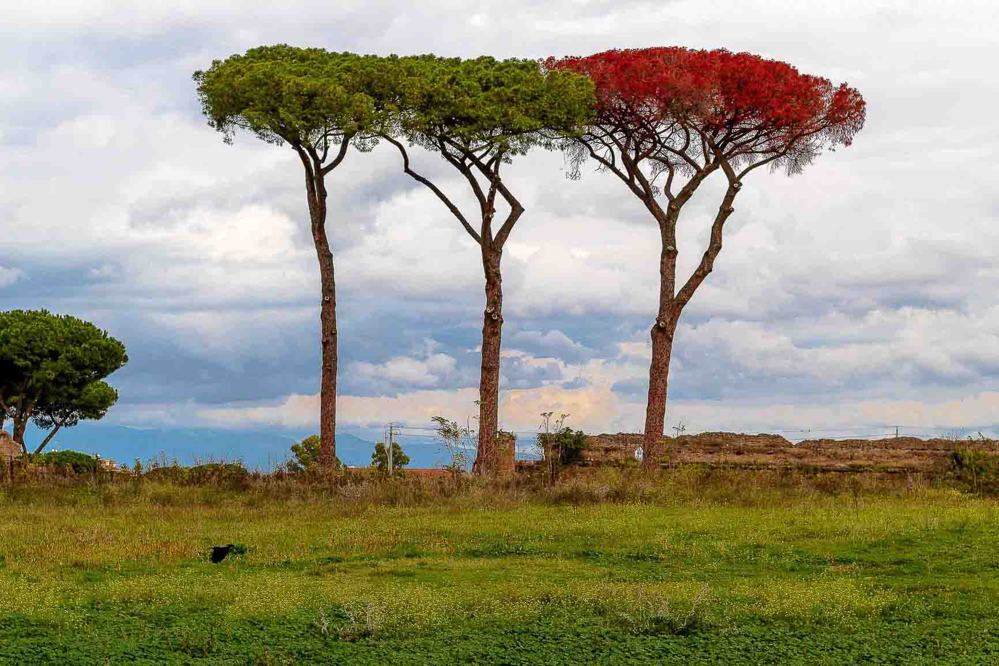
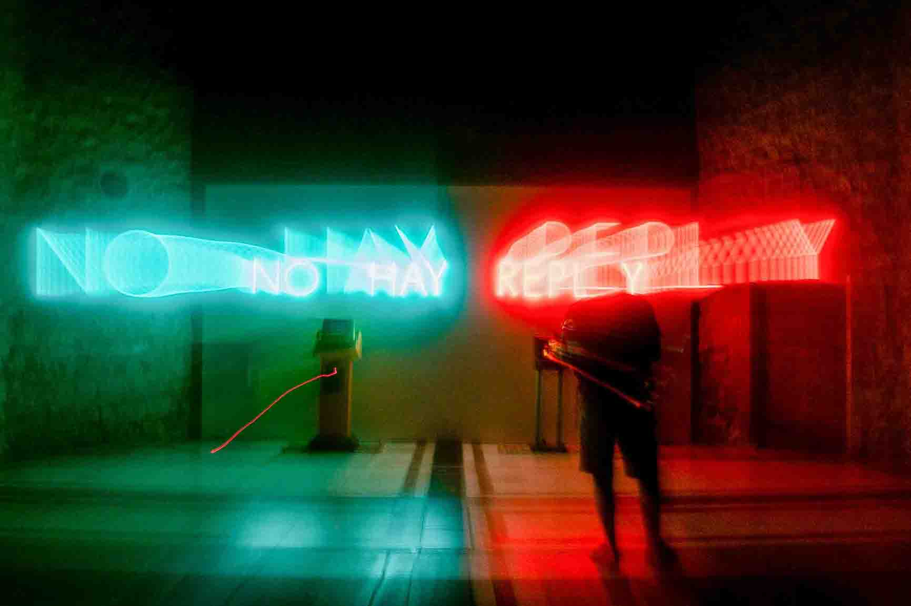
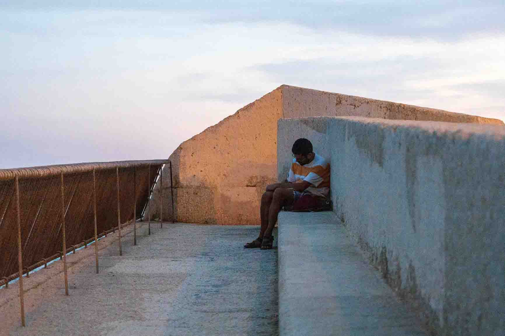
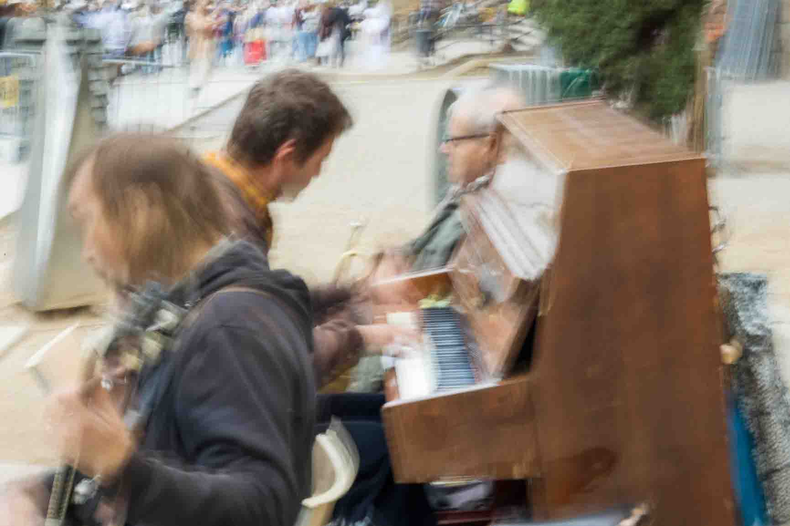
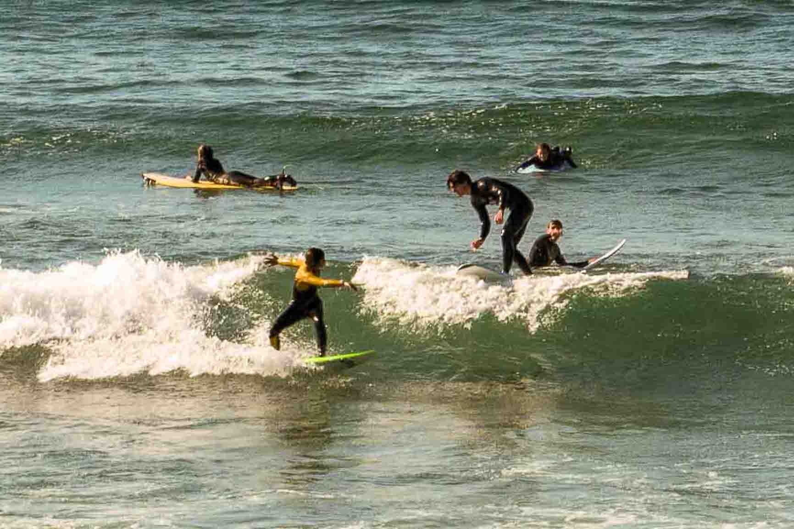

El duomo de Firenze

Napoli
Tres árboles en el acueducto antiguo
de Roma

Plaza Cataluña

Las ramblas de Barcelona en un momento
poco concurrido

Artista nostálgico
Exposición No hay replay, artista:
Carlos Pazos

El antiguo paseo del puerto
de Alicante
Rompeolas de Alicante

Atracción turística
Escritor

Un molino en ruinas

Tres barcos navegando en el levante
Musics de carrer

La concha

Donosti
Fotógrafo

Donosti
Jóvenes haciendo surf en
Donosti
Donosti